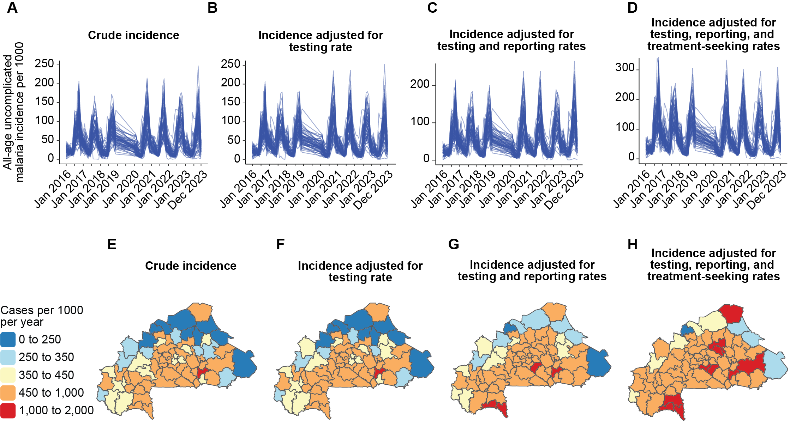
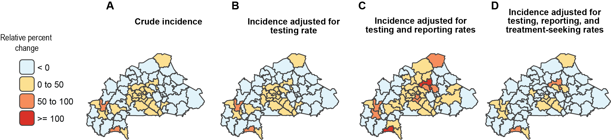
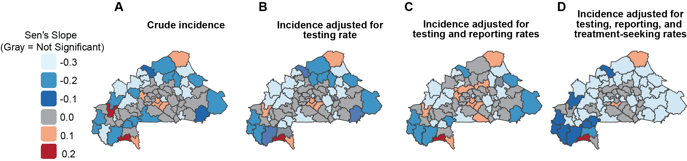

Quantify the trend in malaria incidence at health district level and identify the factors associated with malaria incidence in Burkina Faso from 2016-2023 using routine cases data
Published
August 30, 2025
Overview
The aim of this study was to assess the malaria trends in Burkina Faso at the health district level to help understand the malaria transmission level between 2016 and 2022 and to determine the factors associated with malaria incidence to better understand the drivers of malaria in Burkina Faso.
Methods
Data sources
Monthly routine case data from public and formal private health facilities were extracted from the Burkina Faso health management information system (HMIS) for the period January 2016 to December 2023.
Variable
Definition
Sources
Temporal resolution
Period
Suspected cases
Suspected cases are those presenting clinical symptoms of malaria (fever).
HMIS
Monthly
2016–2023, excluding 2019
Tested cases
Cases who received a diagnostic test (rapid diagnostic test (RDT) or microscopy).
HMIS
Monthly
Confirmed cases
Malaria cases confirmed positive by microscopy or RDT.
HMIS
Monthly
Presumed cases
Cases treated for malaria without a positive test result.
HMIS
Monthly
Population
Number of people per health district per year.
HMIS
Annual
2016–2023
Treatment-seeking behaviors
Proportion of children under five with fever who were: i) taken to seek care in the public sector, ii) in the private sector, iii) not taken to care.
DHS, MIS
Every 3 years
2014, 2017–18, 2021
Incidences adjustments
Crude malaria incidence was calculated by dividing the number of reported confirmed cases for each health district and month by the district population and multiplying by 1000. Then, crude incidence was adjusted for each factor in accordance with the WHO framework (REF).
Quantify trends
Seasonal trend decomposition based on local regression smoothening (STL) using stlplus.
STL additive method was used to decompose each time series Yt into seasonal (St), trend (Tt), and remainder (Rt) components.
Sen’s slope [Ref] was used to quantify the direction and intensity of the trends in the time series of each incidence estimate for each district. Statistical significance of the trend was assessed by a two-sided Mann-Kendall test [REF]. A significance level of 0.05 was used to determine statistical significance.
Factors associated with malaria incidences
The response variable was annual malaria-adjusted cases for testing, reporting, and treatment-seeking rates (adjustment 3). Data for covariates from 2016 to 2023 were extracted from various sources.
Generalized additive models add flexibility in modeling functional relationships between the response variable and the covariates using smooth curves without specifying their exact form (REF).
Burden of malaria in Burkina Faso from 2016 to 2023 using four incidence rates was estimated
The trend in malaria incidence in Burkina Faso from 2016 to 2023 for the four incidences rates was assessed and this allows us to better understand how each adjustment affects the reported malaria burden over time.
The factors associated with malaria incidence was assessed.
Visual Highlights

Temporal and spatial analysis for the four incidences
Ω

Spatial relative percent change between 2016 and 2023

Sen’s slope coefficient for malaria incidence
Code example
Normalize function
Code
## Function for normalize the four incidences rates (comparaison purpose)getNormalized <-function(vec) {if (!is.numeric(vec) ||all(is.na(vec))) {warning("Input vector is non-numeric or all NA; returning original vector")return(vec) } vec_mean <-mean(vec, na.rm =TRUE) vec_sd <-sd(vec, na.rm =TRUE)if (is.na(vec_sd) || vec_sd ==0) {warning("Standard deviation is 0 or NA; returning original vector")return(vec) } (vec - vec_mean) / vec_sd}## Monthly datamonthly_DS_incidence <- monthly_DS_incide %>% dplyr::mutate(mal_cases_norm =getNormalized(`Incidence brute`),incidence_adj_presumed_cases_norm =getNormalized(Adj1),incidence_adj_presumed_cases_RR_norm =getNormalized(Adj2),incidence_adj_presumed_cases_RR_TSR_norm =getNormalized(Adj3) )